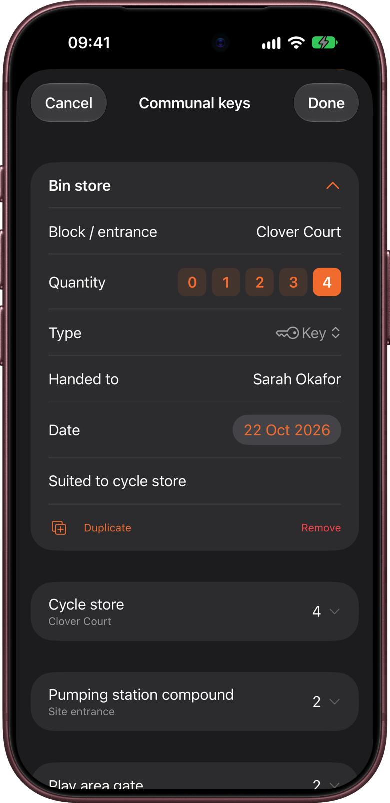
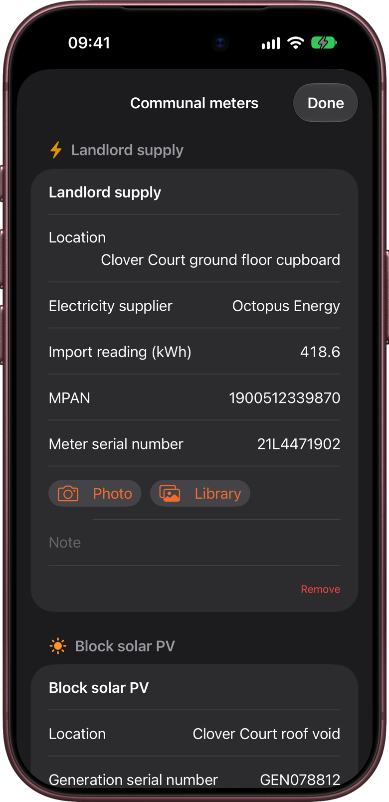
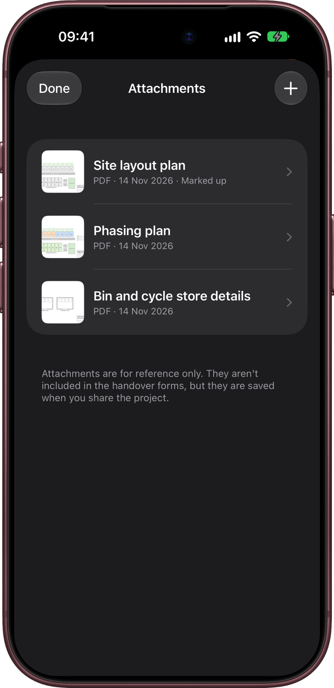
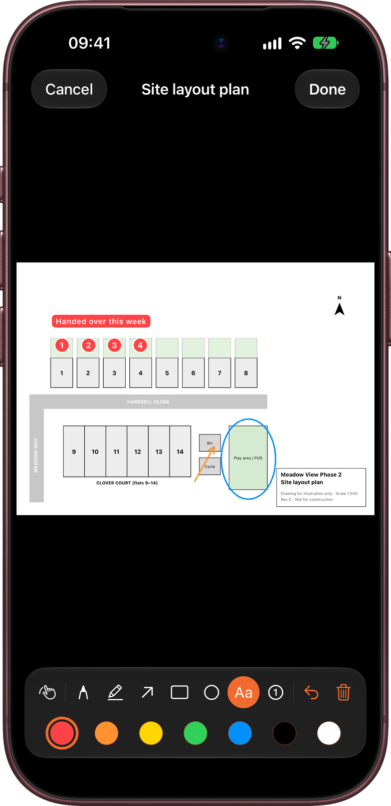
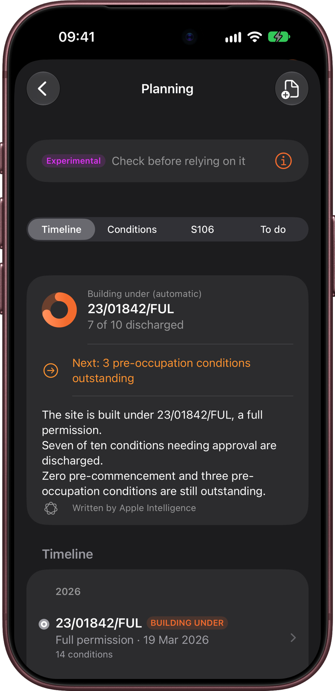
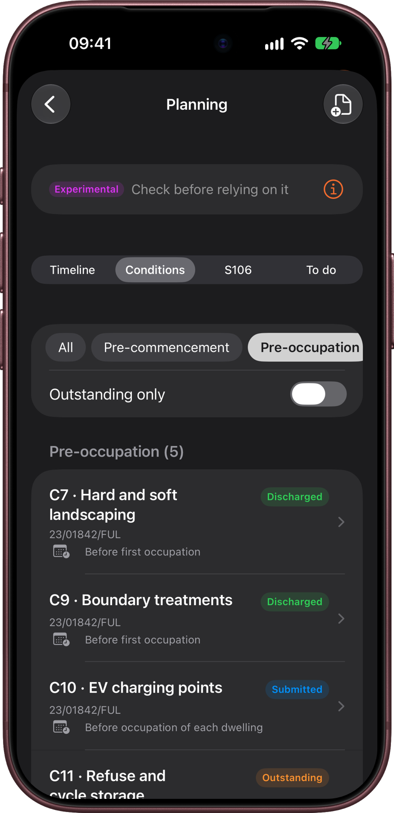
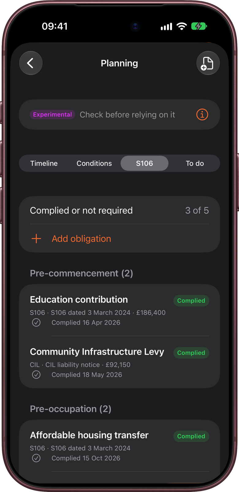

Some things belong to the whole site rather than to one plot: the bin store keys, the landlord's electricity meter, the site plan, and the planning permission the site is being built under. KeyCheck keeps these once, on the project.
This chapter covers communal keys, communal meters, attachments and mark-up, and Planning (decision notices, conditions, discharges and S106 obligations). Project documents are covered in chapter 6, and the project log in chapter 8.
Where to find them
Open a project. Above the plot list are the project's own records:
- Project documents, which also holds Planning (see below)
- Attachments
- Project log
- Communal keys and Communal meters. These two only appear once you've added some, because not every site has them.
To add communal keys or meters for the first time, tap Project setup (the sliders button, top right) and choose Add communal keys… or Add communal meters…. After that, the same menu items are called Communal keys and Communal meters, and the rows appear on the project screen.
Communal keys
Communal keys are keys and fobs for shared areas: the main entrance, bin store, cycle store, plant room, lift, post boxes and so on. They're recorded once for the project, not on every plot. In the Meadow View Phase 2 sample project, they include the bin store, cycle store and play area gate keys, and 12 door entry fobs for Clover Court.
Adding communal keys
- Tap Project setup → Add communal keys….
- Tap Add common keys to start with a ready-made list: communal door (front and rear), post box, bin store, cycle store, lift and plant room. Remove any you don't need. Or tap Add communal key to add one at a time.
- Fill in each key:
- Key: its name, for example "Bin store".
- Block / entrance: optional, for sites with several blocks.
- Quantity: how many you're handing over.
- Type: key, fob and so on.
- Handed to: who received them, for example "HA estates team".
- Set date handed over: tap to record the date. It starts as today; tap the date to change it.
- Note: anything else, for example "To hand over with POS adoption".
- Tap Done.
Each key folds up to one line once you've finished with it, showing its name and quantity. Tap it to open it again. Duplicate copies a key, which is handy for similar keys in different blocks.

The Communal keys row on the project screen shows how many keys have a quantity recorded, for example "4 of 5 recorded".
Site-wide suite keys
If the project uses key suites (chapter 4), each communal key also has Site-wide suite key. Use it for a grand master or other key that opens doors in every building. Other communal keys can then say which suite key also opens them, under Also opened by.
Removing a communal key
Swipe left on a folded key and tap Delete, or touch and hold it and choose Delete. A banner offers Undo straight afterwards. You can also open the key and tap Remove.
Communal keys in the PDFs
Communal keys are added to the end of Export all handover forms. To make a PDF of just the communal keys, tap Export communal keys (PDF) at the bottom of the Communal keys screen.
Communal meters
Communal meters serve the whole block or site rather than one plot: the landlord's electricity supply, block solar panels, EV chargers or a shared water supply. The Meadow View Phase 2 sample project has a landlord supply and block solar PV.
- Tap Project setup → Add communal meters….
- Tap Add landlord supply, solar PV and EV charging to add those three. Remove any you don't need. Or tap Add communal meter and choose one: Landlord supply, Block solar PV, EV charging supply, Communal water or Other meter.
- For each meter, check its Meter name and add a Location, for example "Block A plant room".
- Fill in its details, such as the serial number and reading. Solar PV meters also have an export reading and export MPAN.
- Add a photo with Photo or Library. Meter photos and scanning work the same way as on a plot (chapter 5): KeyCheck can read the serial number and reading from the photo, on your iPhone, for you to check.
- Tap Done.

To remove a meter, tap Remove at the bottom of it and confirm. Its readings and photos are removed with it.
The Communal meters row on the project screen shows how many have a reading, for example "1 of 2 read". Communal meters are included in the progress report (chapter 11).
If the plots don't have their own solar panels and only the block does, switch off Solar PV in Form items (chapter 3), so it doesn't appear on every plot.
Attachments
Attachments are files kept with the project for reference: the site plan, a phasing plan, letters, decision notices or photos of the site. They aren't included in the handover forms, but they're kept with the project when you share it, export it or sync it with iCloud.
Adding attachments
- Open the project and tap Attachments.
- Tap the + button (top right) and choose:
- Scan document: scan paper pages with the camera. All the pages go into one PDF.
- Take photo: take a photo with the camera.
- Choose photos: pick photos from your library.
- Import from Files: pick PDFs or images from Files, iCloud Drive or OneDrive. You can select several at once.
You can also send a PDF or photo to KeyCheck from Mail, Files, Outlook or Teams: tap the share button on the file, choose KeyCheck, then pick the project (chapter 13).

Viewing and sharing an attachment
Tap an attachment to open it, with any mark-up shown on it. Tap Share to send it on by email or Messages, or save it to Files. Any mark-up is included in the shared copy.
Marking up
You can draw on an attachment, for example to circle the plots handed over this week on the site plan, or number the snags on a photo.
- Open the attachment and tap Mark up.
- Choose a tool:
- Pen: draw freehand.
- Highlighter: see-through colour over text or an area.
- Arrow, Rectangle and Ellipse: drag from one corner or end to the other.
- Text: tap where the label should go, type it and tap Add.
- Number: tap to place numbered circles, 1, 2, 3 and so on.
- Choose a colour: red, orange, yellow, green, blue, black or white.
- Tap the Move and zoom (hand) button when you want to move around or zoom in without drawing. Tap a tool to start drawing again.
- On a PDF with several pages, use the arrows to go to the next or previous page ("Page 2 of 5").
- Tap Done to save.
Undo takes back the last thing you drew. Clear page removes all the mark-up on the page you're looking at, after asking. Cancel asks whether to discard your changes.

Mark-up is kept separately from the file, so the original is never changed. Labels placed near the edge of a page are moved inwards so they stay fully on the page.
Renaming and deleting
- Rename: swipe right on an attachment and tap Rename, type the new name and tap Save.
- Delete: swipe left and tap Delete, then confirm. The file and its mark-up are removed from the project.
- Swiping left also shows More, and touching and holding an attachment lists everything: Rename, Read planning conditions (for PDFs, see below) and Delete.
Planning
Planning is experimental. It reads council documents that come in many different layouts, and it will sometimes put a condition in the wrong section or miss a link between decisions. Check what it finds against the documents before relying on it. Planning is a tracker to help you keep on top of the paperwork, not a legal certificate that the site complies with its permission.
Planning keeps the site's planning history in one place: the decision notices, the conditions on them, the discharge decisions that approve those conditions, and the S106 and CIL obligations. It works out which permission the site is being built under, and shows what's still outstanding before work starts and before the homes are occupied.
Open the project, tap Project documents, then tap Planning at the top. The row shows how many conditions are discharged so far.
Planning has four tabs: Timeline, Conditions, S106 and To do. The Meadow View Phase 2 sample project has a full permission (23/01842/FUL) with conditions, discharge decisions and S106 obligations, so it's a good place to look around.
Importing planning files
You don't type conditions in. KeyCheck reads them from the council's documents.
- Save the documents somewhere you can reach from your iPhone, such as Files, iCloud Drive or OneDrive. Download them from the council's planning portal, or save them from the emails they came in.
- In Planning, tap Import planning files (the document with a plus, top right).
- Select every file you have: the permission, any appeal decisions, variations, reserved matters and discharge decisions, all together. They can be in any order. KeyCheck sorts each file by what's in it.
- KeyCheck reads them one by one:
- Files that read cleanly are added straight away.
- If it's unsure about a file, it opens a review screen so you can check what it found before adding it.
- At the end, a summary lists every file and what it added. Tap Undo beside a file to take back everything that file added. Undoing a decision notice also removes the discharge results matched to its conditions.
- Tap Done.
Good to know:
- Refused applications are added to the history, but without any conditions.
- Section 106 agreements and unilateral undertakings are recognised and left out. Add their obligations by hand in the S106 tab (see below).
- Everything is read on your iPhone. Nothing is sent anywhere. Each imported document is also saved in Attachments, so you can open the original.
- To read a decision notice that's already in Attachments, touch and hold it there and choose Read planning conditions.
- You can also send a PDF or Word decision notice to KeyCheck from another app (chapter 13).
- On iPhones with Apple Intelligence, KeyCheck can also identify unusual documents, match discharge letters that describe conditions in words rather than numbers, and write the summary at the top of the Timeline. This happens on the iPhone too, and anything from Apple Intelligence is labelled.
Timeline
The Timeline tab tells the story of the site's planning, from the first permission to the latest discharge.
Building under at the top is a summary: the permission the site is being built under (the working route), a ring showing how many conditions needing approval are discharged, and what's next.
Below it, decisions run down the screen in date order. Each planning route has its own coloured line, so you can see which variations and appeals follow on from which permission. Each row shows the decision's type and date, how many conditions it has, and how it relates to an earlier decision, such as "Varies 24/02154/VAR". The decision types are:
- Outline permission, Full permission and Reserved matters
- Planning appeal
- Section 73 variation: a new permission that changes conditions on an earlier one
- Section 96A amendment: a small, non-material change
- Discharge of conditions
- Refused application
- Other planning decision
Discharge decisions are folded into a line under the permission whose conditions they discharge, for example "3 discharge decisions". Tap it to see them.

Tap any decision to see its reference, date and conditions, the decisions related to it, and the original document under Source document.
Choosing the working route
KeyCheck chooses the working route itself: the latest permission, variation or appeal that hasn't been replaced. The decision shows "KeyCheck chose this as the latest live permission".
If the site is actually being built under a different one, open that decision and tap Use as working route. To go back to KeyCheck's choice, tap Let KeyCheck choose. This only changes how KeyCheck organises the conditions; it doesn't change anything about the permissions themselves.
When you're building under a Section 73 variation, the conditions on the earlier permission that the variation replaces are marked Replaced, and aren't counted as outstanding.
Deleting decisions
To remove a decision imported by mistake, open it and tap Delete decision, then confirm. This also removes its conditions and links.
To start the project's planning again from scratch, scroll to the bottom of the Timeline and tap Delete all planning history, then confirm. This removes every decision, condition, discharge and S106 obligation, and can't be undone. The notices and letters stay in Attachments, so you can import them again.
Conditions
The Conditions tab lists every condition on the working route, under three headings:
- Pre-commencement: must be approved before work starts.
- Pre-occupation: must be approved or done before the homes or buildings are occupied.
- Compliance only: rules to keep to, such as "in accordance with the approved plans", with nothing to submit.
The buttons at the top show All conditions or just one heading. Switch on Outstanding only to hide conditions that are already discharged.
Each condition shows its number, a short title and its status:
| Status | Meaning |
|---|---|
| Outstanding | Still needs to be approved or done. |
| Submitted for discharge | Details have gone to the council and you're waiting for a decision. |
| Formally discharged | The council has approved it. |
| Partially discharged | Part of it has been approved, for example one phase. |
| Superseded or amended | Replaced or changed by a later decision. |
| Ongoing compliance | Nothing to submit, but it must be kept to. |
| Uncertain – requires review | KeyCheck couldn't tell. Check it against the documents. |
When you import a discharge decision, KeyCheck matches it to the conditions it covers and marks them discharged, with the date and the decision's reference.

Changing a condition
Tap a condition to see its full wording, the reason the council gave for it, and its Evidence history: every status it has had, with dates.
- To change its status, tap Status and choose one.
- If KeyCheck put it under the wrong heading, tap Section and choose the right one.
- To delete it, tap Delete condition and confirm.
The screen stays open after a change, so you can check the result.
You can also do these from the list: swipe a condition left to delete it, or touch and hold it for Status ›, Move to section › and Delete.
S106
The S106 tab tracks obligations from Section 106 agreements and the Community Infrastructure Levy (CIL): payments, affordable housing, open space and so on. KeyCheck doesn't read these from the agreement, so you add each one yourself. In the Meadow View Phase 2 sample project, they include an education contribution, the affordable housing transfer and the CIL payment.
- In the S106 tab, tap Add obligation.
- Fill in:
- Obligation: what it is, for example "Education contribution".
- Type: S106 or CIL.
- Agreement: which agreement it's in, for example "S106 dated 12 March 2025".
- Amount: if it's a payment, for example "£120,000".
- Section: Pre-commencement, Pre-occupation or Compliance only.
- When it's due: the trigger, in the agreement's own wording, for example "Before 50% of homes are occupied".
- Status: Outstanding, Complied or Not required. For Complied, set the date under Complied on.
- Evidence: choose a file from Attachments that proves it, such as a payment receipt or the council's confirmation letter. Add the file to Attachments first.
- Note: anything else.
- Tap Save.
The top of the tab shows how many are done, for example "Complied or not required: 2 of 5". Tap an obligation to change it. Swipe left to delete it, or touch and hold it for Edit and Delete.

To do
When KeyCheck spots something it thinks you should check, it goes in the To do tab rather than changing anything by itself. The tab's name shows how many are waiting, for example "To do (3)". Nothing changes until you confirm.
- Conditions to check: suggested status changes, with one card per permission. For example, when a variation repeats a condition that was already discharged on the earlier permission, KeyCheck suggests carrying the discharge over. Tap Confirm all to accept every suggestion on the card, or Review to see them and tap ✓ (Confirm) or ✗ (Reject) on each one.
- Links to check: links between decisions that KeyCheck isn't sure about, for example that one decision varies another.
- Missing documents: references mentioned in your documents that you haven't imported, such as an earlier permission. Import them to complete the history.
Suggestions from Apple Intelligence are labelled Apple Intelligence suggestion.
Planning in the reports
- Progress report (chapter 11): a Planning section with the Building under summary and discharge progress, a drawn timeline, the conditions under each heading with discharge decisions and dates, and the S106 obligations.
- Handover pack (chapter 10): the project documents PDF has a Planning conditions section listing outstanding, discharged and compliance conditions, and the S106 obligations.
- Conditions replaced by the working variation aren't listed.
Planning is mostly office work: whoever deals with the council can import each discharge decision as it arrives, and everyone on a shared project (chapter 12) sees the up-to-date list. Before a progress meeting, check To do and the Conditions tab with Outstanding only switched on. The Pre-commencement and Pre-occupation headings show exactly what's left before work starts and before the first homes are occupied, and the progress report sets this out for the meeting.